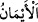
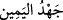
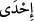

Müşrikler yâni Kureyş “Kendilerine bir uyarıcı (peygamber) gelirse,” Yahudi,
Hıristiyan ve diğer “herhangi bir milletten daha çok doğru yolda olacaklarına dâir
bütün güçleriyle Allah’a yemin etmişlerdi. Fakat onlara uyarıcı” yâni en üstün varlık,
nebi ve peygamberlerin en şereflisi olan Muhammed (a.s.) “gelince, bu” uyarıcı yahut
onun gelişi, “onların haktan” ve hidayetten “uzaklaşmalarından başka bir şeyi
arttırmadı.” Yâni Hak’tan ürküp uzaklaştılar.
Müfredat’ta der ki: “__WORD__ fiili “yemin etti” anlamına gelir. Aslı, “__WORD__ kökündendir.
Bu ise maktûlün velîsine yaptırılan yemini ifâde eder. Sonra bu kelime bütün yeminlere
ad olmuş ve yemine “kasem/kasâme” denilmiştir.” Fiilde geçen zamir, Mekke
müşriklerine râcîdir. Mânâ şu şekildedir: Mekke ahâlisi yüce Allah’a yemin ettiler.
“__WORD__ veya “__WORD__ kelimesi, tâkât ve meşakkat demektir. “__WORD__ kelimesinin
meşakkat, “__WORD__ kelimesinin de güç/kuvvet/tâkât anlamına gelir. “__WORD__, yemin
kelimesinin çoğuludur. Yemin kelimesi yemin etme konusunda “sağ el” mânâsında olan
“yemîn” kelimesinden mecâz olarak kullanılmış, yemin eden ve ahid yapanın bu
durumda yaptığı işe itibar edilerek böyle bir mecâzi kullanıma gidilmiştir. Râğıb der ki:
“Onlar yemin ettiler ve yemin konusunda yapmaları mümkün olanın en zorunu ve en son
yapabileceklerini yaptılar” demektir. Cahiliye Arapları babalarına, putlarına ve daha
başka şeylere yemin ederlerdi. Yine cahiliye Arapları Allah’a da yemin ederler ve buna
“zor yemin” anlamında “__WORD__; ağır yemin anlamında “yemin-i muğlaza” da denilir.
Nâbiğa der ki:
Yemin ettim, sende hiç şüphe bırakmadım.
Kişinin Allah’tan öte matlubu yoktur.
Yâni Allah Teâlâ kişi için bütün matlupların en yücesi olduğu gibi Allah’a yemin
etmek de yeminlerin en üstünüdür. Rivayete göre Hz. Peygamber (s.a.) peygamber
olarak gönderilmeden önce Kureyşlilere Ehli Kitab’ın kendilerine gönderilen
peygamberleri yalanladıkları haberi ulaşınca onlar “Allah Yahudi ve Hıristiyanlara
lânet etsin! Kendilerine gelen peygamberi yalanladılar” demişler ve “Kendilerine bir
uyarıcı (peygamber) gelirse, herhangi bir milletten daha çok doğru yolda
olacaklarına dair bütün güçleriyle Allah’a yemin etmişlerdi.”
Zira âyette geçen “__WORD__ kelimesi yaygın ve umumidir. “__WORD__ kelimesi ise çoğuldur.
Buna göre burada yalnız Yahudi ve Hıristiyan olan iki ümmetten biri murad
edilmektedir. Allah Teâlâ burada “__WORD__ olmaksızın “__WORD__ buyurmamıştır. Çünkü bu
durumda mânâ “ümmetlerin bazılarından” demek olabilirdi.
Allah Teâlâ’nın En’âm suresinin sonlarında “Kitap, yalnız bizden önceki iki
topluluğa (hıristiyanlara ve yahudilere) indirildi, biz ise onların okumasından